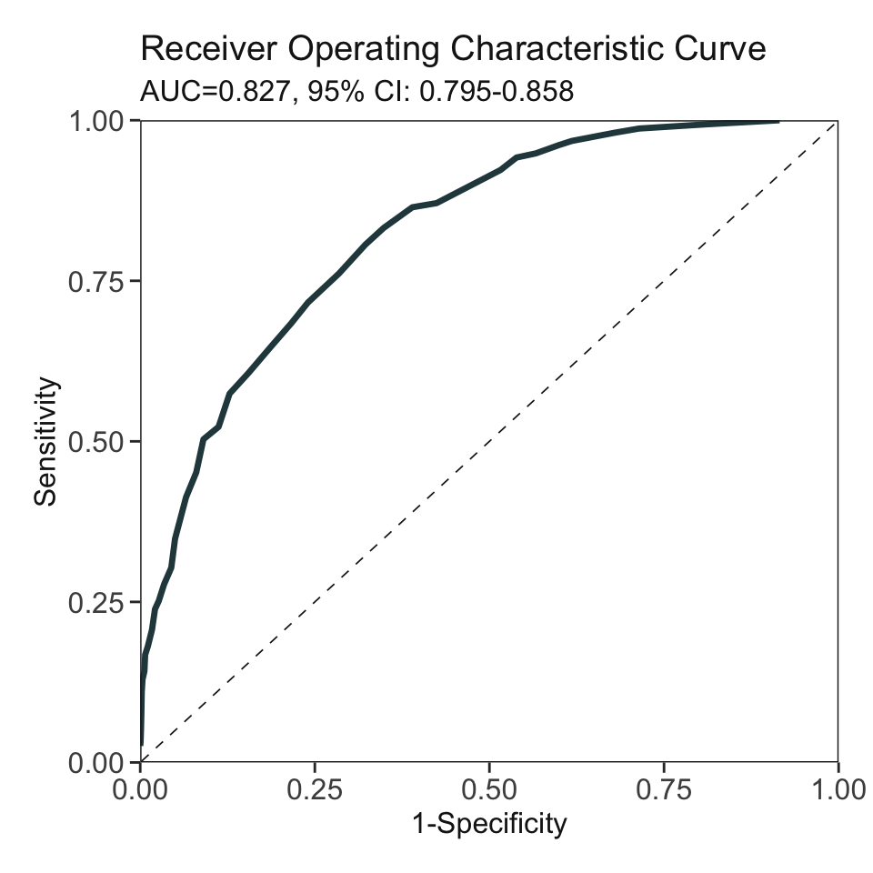

library(AutoScore)
data("sample_data")
names(sample_data)[names(sample_data) == "Mortality_inpatient"] <- "label"
check_data(sample_data)
Your dataset doesn't have any missing values.Data type check passed.Chapter 5 described the AutoScore framework for binary outcomes, using the random forest or AUC-based approach to rank and select variables. This chapter describes an integrated AutoScore-ShapleyVIC framework that uses Shapley variable importance cloud (ShapleyVIC), a recently developed interpretable machine learning approach, for interpretable and robust variable ranking, and the subsequent AutoScore pipelines (AutoScore_parsimony(), AutoScore_weighting(), AutoScore_fine_tuning() and AutoScore_testing()) to develop sparse clinical risk scores.
In this chapter, we demonstrate the use of AutoScore-ShapleyVIC using the same simulated dataset as in Chapter 5, Demo 1, focusing on the variable ranking step using ShapleyVIC and the difference in the resulting parsimony plot.
Cite the following papers for AutoScore-ShapleyVIC:
Ning Y, Ong ME, Chakraborty B, Goldstein BA, Ting DS, Vaughan R, Liu N. Shapley variable importance cloud for interpretable machine learning. Patterns 2022 (https://doi.org/10.1016/j.patter.2022.100452)
Ning Y, Li S, Ong ME, Xie F, Chakraborty B, Ting DS, Liu N. A novel interpretable machine learning system to generate clinical risk scores: An application for predicting early mortality or unplanned readmission in a retrospective cohort study. PLOS Digit Health 1(6): e0000062. (https://doi.org/10.1371/journal.pdig.0000062)
library(AutoScore)
data("sample_data")
names(sample_data)[names(sample_data) == "Mortality_inpatient"] <- "label"
check_data(sample_data)
Your dataset doesn't have any missing values.Data type check passed.sample_data$label <- as.numeric(sample_data$label == "TRUE")set.seed(4)
out_split <- split_data(data = sample_data, ratio = c(0.7, 0.1, 0.2))
train_set <- out_split$train_set
validation_set <- out_split$validation_set
test_set <- out_split$test_setinstall.packages("devtools")
library(devtools)
install_github(repo = "nliulab/ShapleyVIC")library(car) # For VIF analysis of optimal model (needed for ShapleyVIC analysis)
library(ShapleyVIC)
library(tidyverse) # For convenient data manipulation and visualization
library(magrittr) # For convenient data manipulation
library(knitr)m_optim_r <- glm(label ~ ., data = train_set, family = "binomial")
var_vif <- vif(m_optim_r)set.seed(4)
models <- draw_models(
coef_optim = coef(m_optim_r), coef_optim_var = vcov(m_optim_r),
x = train_set[, 1:21], y = train_set$label,
M = 800, u1 = 0.5, u2 = 18, epsilon = 0.05, n_final = 350
)Parameters u1 and u2 need tuning:
u1 usually takes a small value around 0.5.u2 can take a large value for large data.As detailed in the Methods section of the ShapleyVIC paper, these two values can be selected via grid search, using a smaller size of initial sample (e.g., M = 100) to reduce run time. Select values of u1 and u2 such that:
draw_models()).Use the first 3500 observations in the validation set to compute ShapleyVIC values. This step will be time consuming, and users are recommended to use parallel computing if the computer used has multiple cores (using the n_cores parameter).
To check the number of cores available, use the following code:
library(parallel)
n_cores_total = detectCores(logical = TRUE)The appropriate number of cores to use depends on the total memory available and the total number of variables. Users may start with n_cores = floor(n_cores_total / 2), inspect the total % of CPU used, and adjust n_cores to avoid 100% CPU usage (which may freeze the computation process). This example used 6 out of 8 cores on a Mac mini (M1, 2020) and took 50 hours. Users are recommended to save outputs from individual models to a folder for backup purpose, by using the output_folder parameter.
# Create a python version of optimal model:
m_optim <- logit_model_python(
x_train = train_set[, 1:21], y_train = train_set$label
)
set.seed(4)
# Use the python version of optimal model to compute ShapleyVIC values:
df_shapley_vic <- compute_shapley_vic(
model_py = m_optim, var_vif = var_vif, var_vif_threshold = 2,
coef_mat = df_models[, setdiff(names(df_models), "perf_metric")],
perf_metric = df_models$perf_metric,
x_test = Out_split$validation_set[1:3500, x_names_display],
y_test = Out_split$validation_set$label[1:3500],
output_folder = "shapley_vic_output", # Results for each model is saved to this folder
n_cores = 6
)Before proceeding to develop scoring models, users can summarize and visualize the ShapleyVIC values to assess the contribution of the 20 candidate variables to the outcome.
df_shapley_vic_bar <- df_shapley_vic %$% summarise_shapley_vic(
val = shapley_vic_val, val_sd = sage_sd, var_names = var_names
)
df_shapley_vic_bar %$% draw_bars(
val = val, val_lower = val_lower, val_upper = val_upper, var_names = Variable,
title = "Overall variable importance across 350 nearly optimal models"
) df_shapley_vic %$% draw_violins(
var_names = var_names,
var_ordering = levels(df_shapley_vic_bar$Variable),
val = shapley_vic_val, perf_metric = perf_metric,
title = "Variable importance from 350 nearly optimal models"
)summarise = TRUE to generate ensemble variable ranking by averaging variable ranks across the 350 nearly optimal models.val_ranks <- df_shapley_vic %$% rank_variables(
val = shapley_vic_val, val_sd = sage_sd, model_id = model_id, var_names = var_names,
summarise = TRUE, ties.method = "min"
) %>% arrange(mean_rank) %>%
filter(Variable %in% df_shapley_vic_bar$Variable[which(df_shapley_vic_bar$val_lower > 0)])
kable(val_ranks, digits = 1)| Variable | mean_rank |
|---|---|
| Age | 1.0 |
| Lab_H | 2.0 |
| Vital_E | 3.3 |
| Lab_K | 4.0 |
| Vital_A | 5.4 |
| Lab_B | 5.8 |
| Vital_C | 8.7 |
| Lab_C | 9.4 |
| Lab_M | 9.9 |
| Lab_E | 10.1 |
| Lab_D | 10.5 |
| Lab_L | 11.1 |
| Vital_D | 13.0 |
| Lab_J | 14.2 |
| Vital_B | 14.3 |
| Vital_F | 16.5 |
Smaller value of mean_rank indicates higher importance.
ranking <- val_ranks$mean_rank
names(ranking) <- val_ranks$VariableAUC <- AutoScore_parsimony(
train_set = train_set, validation_set = validation_set,
rank = ranking, max_score = 100, n_min = 1, n_max = length(ranking)
)Select 1 Variable(s): Area under the curve: 0.6649
Select 2 Variable(s): Area under the curve: 0.7466
Select 3 Variable(s): Area under the curve: 0.7881
Select 4 Variable(s): Area under the curve: 0.8009
Select 5 Variable(s): Area under the curve: 0.8137
Select 6 Variable(s): Area under the curve: 0.8268
Select 7 Variable(s): Area under the curve: 0.8221
Select 8 Variable(s): Area under the curve: 0.8227
Select 9 Variable(s): Area under the curve: 0.8215
Select 10 Variable(s): Area under the curve: 0.8185
Select 11 Variable(s): Area under the curve: 0.8274
Select 12 Variable(s): Area under the curve: 0.8294
Select 13 Variable(s): Area under the curve: 0.8281
Select 14 Variable(s): Area under the curve: 0.8261
Select 15 Variable(s): Area under the curve: 0.8256
Select 16 Variable(s): Area under the curve: 0.8322A feasible choice is to select the top 6 variables, Age, Lab_H, Vital_E, Lab_K, Vital_A, Lab_B, resulting in the same model as developed in Chapter 5.
cut_vec <- AutoScore_weighting(
train_set = train_set, validation_set = validation_set,
final_variables = names(ranking)[1:6], max_score = 100
)****Included Variables:
variable_name
1 Age
2 Lab_H
3 Vital_E
4 Lab_K
5 Vital_A
6 Lab_B
****Initial Scores:
======== ========== =====
variable interval point
======== ========== =====
Age <35 0
[35,49) 7
[49,76) 17
[76,89) 23
>=89 27
Lab_H <0.2 0
[0.2,1.1) 4
[1.1,3.1) 9
[3.1,4) 15
>=4 18
Vital_E <12 0
[12,15) 2
[15,22) 7
[22,25) 12
>=25 15
Lab_K <8 0
[8,42) 6
[42,58) 11
>=58 14
Vital_A <60 0
[60,73) 1
[73,98) 6
[98,111) 10
>=111 13
Lab_B <8.5 0
[8.5,11.2) 4
[11.2,17) 7
[17,19.8) 10
>=19.8 12
======== ========== =====
***Performance (based on validation set):
AUC: 0.8268 95% CI: 0.7953-0.8583 (DeLong)
Best score threshold: >= 57
Other performance indicators based on this score threshold:
Sensitivity: 0.8065
Specificity: 0.6775
PPV: 0.1736
NPV: 0.9766
***The cutoffs of each variable generated by the AutoScore are saved in cut_vec. You can decide whether to revise or fine-tune them Users can follow detailed steps in Chapter 5 for subsequent model fine-tuning and evaluation.